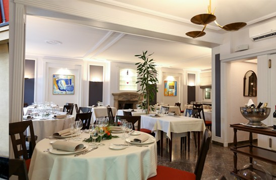
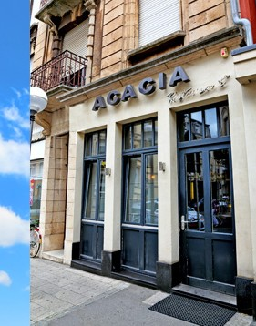
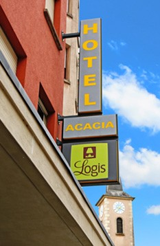

La Maison
DDepuis 1980, la même main tient les fourneaux du restaurant Acacia. Serge Rihm y a d'abord cuisiné aux côtés de son père Marc, avant de reprendre seul le piano de la maison — une table familiale, l'une des plus établies du sud du Grand-Duché.
Ici, la cuisine est française, de saison et de marché : gastronomique dans le geste, traditionnelle dans l'âme, avec ce qu'il faut d'esprit pour la garder vivante. Les habitués reviennent pour les classiques ; on les comprend.
Salle claire aux nappes blanches, banquettes terracotta, cheminée de pierre et lustre de laiton : une adresse élégante et sans façon, faite pour un déjeuner d'affaires comme pour un dîner d'anniversaire.

- Cuisine
- Française · tradition
- Depuis
- 1980
- Ville
- Esch-sur-Alzette
- Guide
- TripAdvisor 4,3/5
- Esprit
- Élégant, sans façon
- Conforts
- Clim. · parking · bar
La Carte
Entrées pour commencer
Poissons de la mer
Viandes de nos régions
Desserts & fromages
Carte donnée à titre indicatif, compilée d'après la presse et les guides — les plats et leur disponibilité varient au fil des saisons et du marché. Carte complète à confirmer avec l'établissement.
Les Formules
Menu des saveurs
Le menu de saison de la maison — entrée, plat et dessert au gré du marché.
Menu business
Pensé pour le déjeuner d'affaires : service soigné, tempo maîtrisé.
Menu végétarien
Une lecture végétale de la saison. Forfait vins ~15 € en accompagnement.
Heures & Adresse
Le service
| Lundi – Samedi | 12h00 – 14h00 · 19h00 – 22h00 |
| Dimanche | Fermé |
Nous trouver
- Adresse10, rue de la Libération, L-4210 Esch-sur-Alzette (code postal à confirmer)
- Téléphone+352 54 10 61
- Courrielhacacia@pt.lu
- HôtelRestaurant de l'Hôtel Acacia (Logis)

